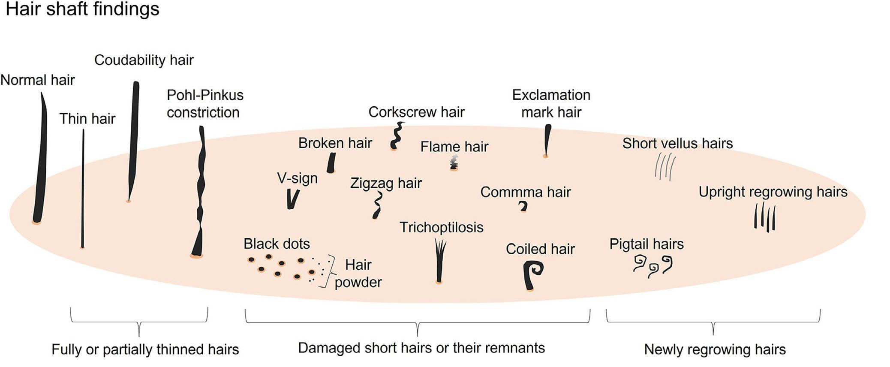

Hair Loss Classification Support Tool
1. Hair shaft findings (모간 소견)

참고: 모간의 형태학적 이상 소견
2. Follicular & Perifollicular findings (모낭 및 모낭 주위 소견)

참고: 모낭 및 모낭 주위 이상 소견
3. Scalp findings (두피 소견)

참고: 두피 혈관 및 기타 소견
Analysis Results (분석 결과)
분석 원리: 선택된 증상의 PPV(양성 예측도)를 합산하고, 해당 질환에서 흔히 나타나야 할 증상이 없는 경우 페널티를 부여하여 순위를 산출합니다.
※ 본 도구는 통계적 데이터를 기반으로 한 참고용이며, 최종 진단은 반드시 전문의의 진료를 통해 결정되어야 합니다.